import warningswarnings.filterwarnings('ignore')import pandas as pdimport numpy as npfrom datetime import datetimeimport matplotlib.pyplot as pltimport seaborn as sns%matplotlib inlineimport matplotlib.gridspec as gridspecimport plotly.graph_objects as gofrom matplotlib.colors import LinearSegmentedColormapfrom matplotlib import colors as mcolorsimport matplotlib.cm as cmpd.set_option('display.max_columns', 100)import jsonfrom wordcloud import WordCloudfrom collections import Counterfrom sklearn.ensemble import IsolationForestfrom sklearn.preprocessing import StandardScaler, OneHotEncoder, MinMaxScalerfrom sklearn.decomposition import PCAfrom yellowbrick.cluster import KElbowVisualizerfrom sklearn.metrics import silhouette_score, calinski_harabasz_score, davies_bouldin_score, silhouette_samplesfrom sklearn.cluster import KMeans, DBSCANfrom sklearn.neighbors import NearestNeighborsfrom itertools import productfrom kneed import KneeLocator# from tabulate import tabulate
Feature Engineering
In this section, I engineered the categorical features by calculating the frequency percentage for each categories, a bit similar to one-hot encoding but more detailed and useful.
# Calculate the percentage of each payment_type for each customer_unique_idpayment_type_percentage = customer_rfm.groupby(['customer_unique_id', 'payment_type']).size() / customer_rfm.groupby('customer_unique_id').size()payment_type_percentage = payment_type_percentage.reset_index(name='payment_type_percentage')# Pivot the payment_type_percentage dataframe to create featurespayment_type_features = payment_type_percentage.pivot(index='customer_unique_id', columns='payment_type', values='payment_type_percentage').fillna(0)
# Calculate the percentage of each payment_type for each customer_unique_idproduct_category_percentage = customer_product.groupby(['customer_unique_id', 'product_category_group']).size() / customer_product.groupby('customer_unique_id').size()product_category_percentage = product_category_percentage.reset_index(name='product_category_percentage')# Pivot the payment_type_percentage dataframe to create featuresproduct_category_features = product_category_percentage.pivot(index='customer_unique_id', columns='product_category_group', values='product_category_percentage').fillna(0)
# filter rows with not defined payment methods or missing product categoriescustomer_agg = customer_agg[(customer_agg['not_defined'] ==0) & (customer_agg['Missing'] ==0)].reset_index(drop=True)customer_agg.head()
customer_unique_id
avg_review_score
order_counts
review_score_counts
review_comment_counts
rating_rate
comment_rate
n_payment_types
average_payment_value
average_order_value
boleto
credit_card
debit_card
not_defined
voucher
Beauty & Fashion
Electronics
Home & Living
Leisure & Entertainment
Missing
Tools
order_purchase_timestamp
Recency
Frequency
Monetary
0
0000366f3b9a7992bf8c76cfdf3221e2
5.0
1
1
1
1.0
1.0
1
141.90
141.90
0.0
1.0
0.0
0.0
0.0
0.0
0.0
1.0
0.0
0.0
0.0
2018-05-10 10:56:27
160
1
141.90
1
0000b849f77a49e4a4ce2b2a4ca5be3f
4.0
1
1
0
1.0
0.0
1
27.19
27.19
0.0
1.0
0.0
0.0
0.0
1.0
0.0
0.0
0.0
0.0
0.0
2018-05-07 11:11:27
163
1
27.19
2
0000f46a3911fa3c0805444483337064
3.0
1
1
0
1.0
0.0
1
86.22
86.22
0.0
1.0
0.0
0.0
0.0
0.0
0.0
0.0
0.0
0.0
1.0
2017-03-10 21:05:03
585
1
86.22
3
0000f6ccb0745a6a4b88665a16c9f078
4.0
1
1
1
1.0
1.0
1
43.62
43.62
0.0
1.0
0.0
0.0
0.0
0.0
1.0
0.0
0.0
0.0
0.0
2017-10-12 20:29:41
369
1
43.62
4
0004aac84e0df4da2b147fca70cf8255
5.0
1
1
0
1.0
0.0
1
196.89
196.89
0.0
1.0
0.0
0.0
0.0
0.0
1.0
0.0
0.0
0.0
0.0
2017-11-14 19:45:42
336
1
196.89
# drop rows with NA valuescustomer_agg.dropna(inplace=True)
RFM stands for Recency - Frequency - Monetary Value. Theoretically we will have segments like below: - Low Value: Customers who are less active than others, not very frequent buyer/visitor and generates very low - zero - maybe negative revenue. - Mid Value: In the middle of everything. Often using our platform (but not as much as our High Values), fairly frequent and generates moderate revenue. - High Value: The group we don’t want to lose. High Revenue, Frequency and low Inactivity.
In this part, we clustered customers based on each of the R, F and M features, developing 3 independent clustering models and generated 3 scores for customers. Then, we segmented customers based on their overall scores, and developed corresponding marketing strategies based on each segment.
plt.figure(figsize=(10, 6))plt.hist(customer_agg_r['Recency'], bins=50, color='skyblue', edgecolor='black')plt.title('Distribution of Recency')plt.xlabel('Recency')plt.show()
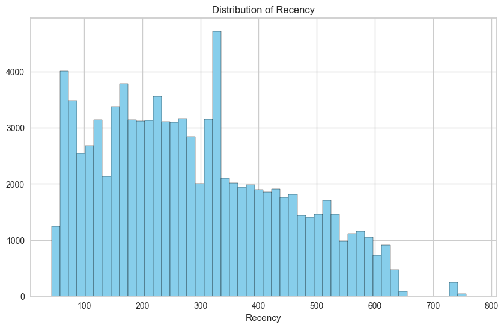
To validate cluster consistency, we calculate the silhouette score to determine the optimal number of clusters.
customer_recency = customer_agg_r[['Recency']]for k inrange(2, 10): kmeans = KMeans(n_clusters=k, max_iter=1000) kmeans.fit(customer_recency) cluster = kmeans.predict(customer_recency) silhouette_avg = silhouette_score(customer_recency, cluster)print("For n_clusters =", k, "The average silhouette_score is :", silhouette_avg)
For n_clusters = 2 The average silhouette_score is : 0.5979511286310562
For n_clusters = 3 The average silhouette_score is : 0.5779837935252317
For n_clusters = 4 The average silhouette_score is : 0.5516119180125003
For n_clusters = 5 The average silhouette_score is : 0.5594744364773283
For n_clusters = 6 The average silhouette_score is : 0.55152391554954
For n_clusters = 7 The average silhouette_score is : 0.5419622285852782
For n_clusters = 8 The average silhouette_score is : 0.551433655047126
For n_clusters = 9 The average silhouette_score is : 0.5547635663559449
Here it looks like 2 is the optimal one. Based on business requirements, we can go ahead with less or more clusters. We will be selecting 3 for this example:
customer_frequency = customer_agg_f[['Frequency']]for k inrange(2, 10): kmeans = KMeans(n_clusters=k, max_iter=1000) kmeans.fit(customer_frequency) cluster = kmeans.predict(customer_frequency) silhouette_avg = silhouette_score(customer_frequency, cluster)print("For n_clusters =", k, "The average silhouette_score is :", silhouette_avg)
For n_clusters = 2 The average silhouette_score is : 0.9959143019910768
For n_clusters = 3 The average silhouette_score is : 0.9991738819194673
For n_clusters = 4 The average silhouette_score is : 0.9997243431767148
For n_clusters = 5 The average silhouette_score is : 0.9998829013745711
For n_clusters = 6 The average silhouette_score is : 0.9998776183760678
For n_clusters = 7 The average silhouette_score is : 0.999940810572308
For n_clusters = 8 The average silhouette_score is : 0.9999892382858742
For n_clusters = 9 The average silhouette_score is : 0.9999892382858742
The range of Monetary values extends from 9.59 to 13664.08, which is quite substantial.
customer_monetary = customer_agg_m[['Monetary']]
for k inrange(2, 10): kmeans = KMeans(n_clusters=k, max_iter=1000) kmeans.fit(customer_monetary) cluster = kmeans.predict(customer_monetary) silhouette_avg = silhouette_score(customer_monetary, cluster)print("For n_clusters =", k, "The average silhouette_score is :", silhouette_avg)
For n_clusters = 2 The average silhouette_score is : 0.8564679756449658
For n_clusters = 3 The average silhouette_score is : 0.7510380222316281
For n_clusters = 4 The average silhouette_score is : 0.6633465459138262
For n_clusters = 5 The average silhouette_score is : 0.6391561108688881
For n_clusters = 6 The average silhouette_score is : 0.6071155715590132
For n_clusters = 7 The average silhouette_score is : 0.6038896855801742
For n_clusters = 8 The average silhouette_score is : 0.6008690166574147
For n_clusters = 9 The average silhouette_score is : 0.5775992461134888
Radar plots are particularly useful when we need to compare multiple quantitative variables in a way that reveals patterns or differences in their distribution across various categories or entities. Each axis on a radar plot represents a different variable, and the values for each cluster are plotted along these axes.
def make_radar_chart(ax, stats, attribute_labels, plot_str='-', color='b'): angles = np.linspace(0, 2* np.pi, len(attribute_labels), endpoint=False).tolist() stats = np.concatenate((stats, [stats[0]])) # Close the loop angles += angles[:1] # Close the loop ax.set_theta_offset(np.pi /2) ax.set_theta_direction(-1) ax.fill(angles, stats, alpha=0.25, color=color) ax.plot(angles, stats, plot_str, marker='o', color=color) ax.set_xticks(angles[:-1]) ax.set_xticklabels(attribute_labels)# Setting the range for each axis ax.set_ylim(0, 1) # This sets the radial limits from 0 to 1# Adjust the location and direction of labelsfor label, angle inzip(ax.get_xticklabels(), angles):if angle in (0, np.pi): label.set_horizontalalignment('center')elif0< angle < np.pi: label.set_horizontalalignment('left')else: label.set_horizontalalignment('right') label.set_verticalalignment('bottom') label.set_rotation(np.degrees(angle)) label.set_rotation_mode('anchor')# Example of creating the radar chartsfig, axs = plt.subplots(nrows=3, ncols=3, figsize=(20, 12), subplot_kw=dict(polar=True))colors = ['red', 'green', 'blue', 'orange', 'purple', 'brown', 'pink']# Assuming rfm_scaled is a list of scaled data arrays, each corresponding to a clusterfor i, ax inenumerate(axs.flatten()):if i <len(rfm_scaled): make_radar_chart(ax, rfm_scaled[i], rfm_df.columns, color=colors[i %len(colors)]) ax.set_title(f'Cluster {i}')else: ax.set_visible(False)plt.tight_layout()plt.show()
Cluster 0 and 1:
Has very high Recency, low Frequency and Monetary values. This group likely represents customers with very low engagement and spending recently. These customers are considered as Churning Customers.
Cluster 2:
Has relatively low Recency,Frequency and Monetary values. This indicates customers who have engaged recently but with infrequent purchases and low spending. These customers are also considered as New Customers.
Cluster 3:
Exhibits moderate levels of Recency, Frequency and Monetary values. Customers in this cluster are moderate across all dimensions. These customer are considered as Need Attention Customers.
Cluster 4:
Has relatively low Recency, moderate Fequency and high Monetary values. Customers in this cluster show relatively high engagement recently and have high purchasing power, demonstrating signs of loyalty for the platform. These customer are considered as Loyal Customers.
Cluster 5:
Shows relatively low Recency, high Frequency, and moderate Monetary values. This suggests customers who engaged recently and actively, though did not spend much. These customer are considered as Promising Customers.
Cluster 6:
Represents customers with the lowest Recency and highest Frequency and Monetary values.These customer are the most valuable customers for the platform, considered as Core Customers.
To keep things simple, better we name these scores:
Examine the distribution of our segments on a scatter plot:
import seaborn as snsimport matplotlib.pyplot as plt# Plot Recency vs Frequency with segmentsns.scatterplot(data=customer_agg_rfm, x='Frequency', y='Monetary', hue='Segment', palette='viridis')plt.xlabel('Frequency')plt.ylabel('Monetary')plt.title('Frequency vs Monetary with Segment')plt.show()
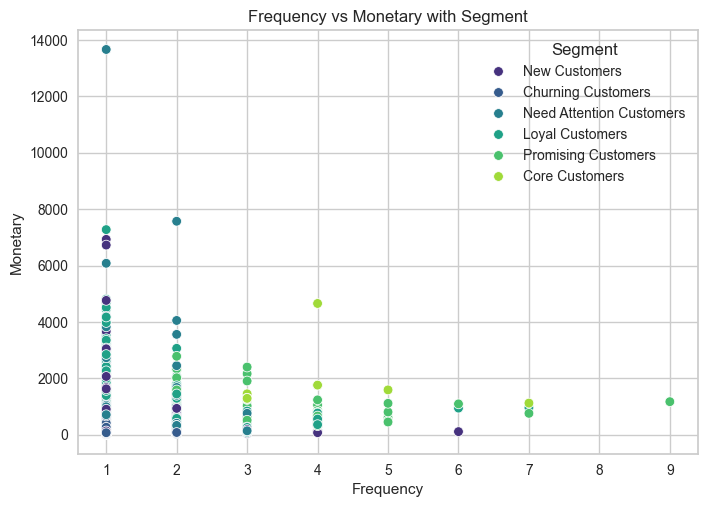
# Plot Recency vs with segmentsns.scatterplot(data=customer_agg_rfm, x='Recency', y='Monetary', hue='Segment', palette='viridis')plt.xlabel('Recency')plt.ylabel('Monetary')plt.title('Recency vs Monetary with Segment')plt.show()
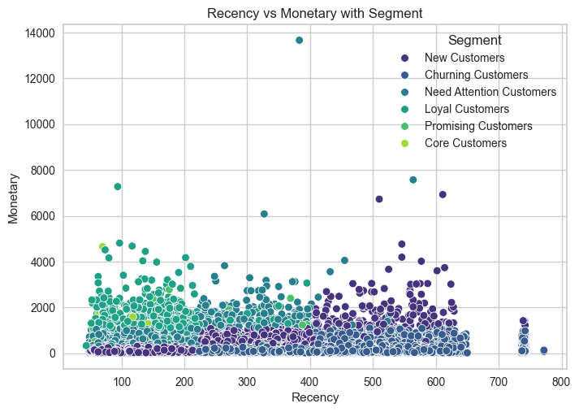
# Plot Recency vs with segmentsns.scatterplot(data=customer_agg_rfm, x='Recency', y='Frequency', hue='Segment', palette='viridis')plt.xlabel('Recency')plt.ylabel('Frequency')plt.title('Recency vs Frequency with Segment')plt.show()
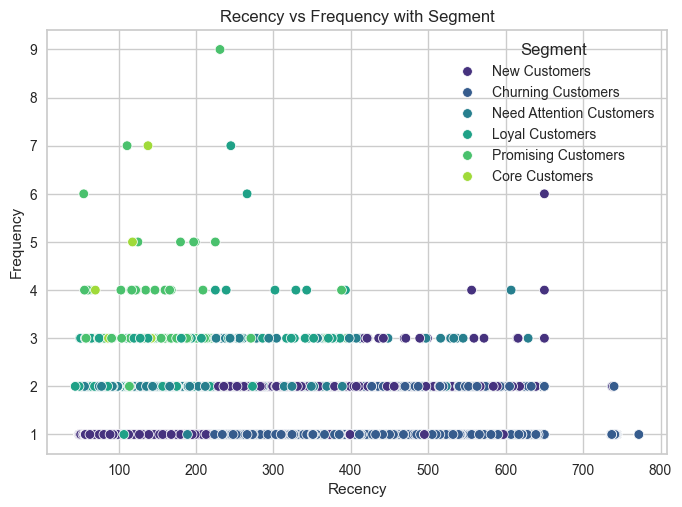
We can start taking actions with this segmentation. The main strategies are quite clear:
Cluster 0, 1: Churning Customers
Implement win-back campaigns using personalized emails that offer special incentives for certain products and subscription to re-engage these customers.
Use welcome emails, product tutorials, and first-time buyer offers to enhance their initial experience. Encourage product discovery and second purchases with targeted follow-up campaigns. Collect data on their preferences for future personalization.
Cluster 2: New Customers
Welcome programs that educate them about the platform, coupled with introductory offers that encourage further purchases. Engage them through regular newsletters that highlight bestselling products or offer tips on maximizing their shopping experience.
Cluster 3: Need Attention Customers
Create engagement programs that offer loyalty points or rewards for frequent interactions to increase their transaction frequency. Increase touchpoints via social media or personalized emails to keep them informed and involved with the brand.
Cluster 4: Loyal Customers
Develop loyalty programs such as membership with tiered benefits such as exclusive offers and reward points. Involve them in product development or beta testing new features to deepen their connection with the brand.
Cluster 5: Promising Customers
Encourage higher spending through upselling and cross-selling techniques tailored to their purchasing patterns, and offer bundle deals or volume discounts to increase their average order value.
Cluster 6: Core Customers
Provide VIP customer service options, such as priority customer support and limited access to exclusive offers, early releases of new features and VIP-only events to acknowledge their value to the platform. Design referral incentives to encourage them to advocate for the platform through social media.
After RFM Modeling, we further examined the customer segmentation based on all useful features derived in our data.
Preprocessing
In this part, we processed our data for better clustering. Meaningful clustering based on all features (not only R,F and M) is much harder than traditional RFM Modeling, since clustering methods can be impacted by data skewness, scales and dimensionality.
Skewness - Transformation
Skewness in the features of a dataset significantly impacts clustering algorithms like K-means, since it uses distance measurements to determine the similarity between data points. Therefore, I tried to transfom the skewed features to be more normal.
Frequency still does not look normal. Need to consider if it should be taken into clustering. Recency and Monetary looks okay after transformation.
Outlier Detection
Outliers can potentially skew the results of our analysis, especially in kmeans clustering where they can significantly influence the position of the cluster centroids. Therefore, it is essential to identify and treat these outliers appropriately to achieve more accurate and meaningful clustering results.
Since there are a lot of features in data, it would be more prudent to use machine learning algorithms to detect outliers in multi-dimensional spaces, compared with the IQR method where we can only detect outliers for each one of the features.
Isolation Forest works well for outlier detection in multi-dimensional data and is computationally efficient. It isolates observations by randomly selecting a feature and then randomly selecting a split value between the maximum and minimum values of the selected feature, and outliers are marked if the branch of that datapoint is too short. However, the hyperparameter contamination need to be initialized based on prior knowledge of the data, specifically the proportion of outliers in data, which is kind of hard for our data.
Therefore, I decided to first try IQR method on some insightful features, and use this information to aid in initializing the contamination hyperparameter in IsolationForest model.
I only selected 4 continuous numerical value for IQR outlier detection, since other numerical features are discrete and also do not have a large range, which means it’s hard to detect the outliers using statistical methods.
# Calculate the IQR for each featureQ1 = customer_agg[outlier_detect_cols].quantile(0.25)Q3 = customer_agg[outlier_detect_cols].quantile(0.75)IQR = Q3 - Q1# Define the lower and upper boundslower_bound = Q1 -1.5* IQRupper_bound = Q3 +1.5* IQR# Detect outliers for each featureoutliers = {}for column in outlier_detect_cols: outliers[column] = customer_agg[(customer_agg[column] < lower_bound[column]) | (customer_agg[column] > upper_bound[column])]# Print the outliers for each featurefor column, outlier_df in outliers.items():print(f"{outlier_df.shape[0]} outliers for {column}")
1565 outliers for average_payment_value_log
0 outliers for Recency_log
2805 outliers for Frequency_log
1387 outliers for Monetary_log
customer_agg.shape
(92922, 28)
~ 2000 outliers from ~90000 datapoints, outlier proportion nearly 0.02
Isolation Forest
Based on the IQR information, we can initialize the Isolation Forest with contamination=0.02, which means we set the threshold for outlier detection with an approximately 2% proportion of outliers in data.
# Using Isolation Forest to detect outliersmodel = IsolationForest(contamination=0.02, random_state=42)# Fitting the model on our dataset (converting DataFrame to NumPy to avoid warning)customer_agg['Outlier_Scores'] = model.fit_predict(customer_agg[outlier_detect_cols].to_numpy())# Creating a new column to identify outliers (1 for inliers and -1 for outliers)customer_agg['Is_Outlier'] = [1if x ==-1else0for x in customer_agg['Outlier_Scores']]
customer_agg[customer_agg.Is_Outlier==1]
customer_unique_id
avg_review_score
order_counts
review_score_counts
review_comment_counts
rating_rate
comment_rate
n_payment_types
average_payment_value
boleto
credit_card
debit_card
voucher
Beauty & Fashion
Electronics
Home & Living
Leisure & Entertainment
Tools
order_purchase_timestamp
Recency
Frequency
Monetary
Recency_log
Frequency_log
Monetary_log
Outlier_Scores
Is_Outlier
average_payment_value_log
120
004b45ec5c64187465168251cd1c9c2f
3.000000
2
2
2
1.0
1.000000
1
73.860000
1.0
0.000000
0.0
0.000000
0.000000
0.0
1.000000
0.0
0.0
2018-05-26 19:42:48
143
2
147.72
4.962845
0.693147
4.995319
-1
1
4.302171
254
00adeda9b742746c0c66e10d00ea1b74
1.000000
1
1
1
1.0
1.000000
1
2148.400000
0.0
1.000000
0.0
0.000000
0.000000
1.0
0.000000
0.0
0.0
2017-11-07 16:54:04
344
1
2148.40
5.840642
0.000000
7.672479
-1
1
7.672479
287
00c07da5ba0e07b4f248a3a373b07476
5.000000
1
1
0
1.0
0.000000
1
2304.680000
0.0
1.000000
0.0
0.000000
0.000000
0.0
0.000000
0.0
1.0
2018-07-27 14:28:20
82
1
2304.68
4.406719
0.000000
7.742697
-1
1
7.742697
416
011875f0176909c5cf0b14a9138bb691
5.000000
1
1
0
1.0
0.000000
1
4016.910000
0.0
1.000000
0.0
0.000000
0.000000
1.0
0.000000
0.0
0.0
2017-03-18 20:08:04
577
1
4016.91
6.357842
0.000000
8.298268
-1
1
8.298268
428
012452d40dafae4df401bced74cdb490
4.500000
2
2
1
1.0
0.500000
2
165.110000
0.0
0.666667
0.0
0.333333
0.500000
0.0
0.500000
0.0
0.0
2018-05-14 12:12:45
156
2
495.33
5.049856
0.693147
6.205224
-1
1
5.106612
...
...
...
...
...
...
...
...
...
...
...
...
...
...
...
...
...
...
...
...
...
...
...
...
...
...
...
...
...
93455
ff922bdd6bafcdf99cb90d7f39cea5b3
4.333333
3
3
1
1.0
0.333333
1
46.533333
0.0
1.000000
0.0
0.000000
0.333333
0.0
0.666667
0.0
0.0
2017-09-14 14:24:04
398
3
139.60
5.986452
1.098612
4.938781
-1
1
3.840169
93514
ffba9f9dff87b05e310ecc46c8591044
5.000000
1
1
1
1.0
1.000000
1
1626.830000
0.0
1.000000
0.0
0.000000
0.000000
1.0
0.000000
0.0
0.0
2017-02-27 15:39:41
597
1
1626.83
6.391917
0.000000
7.394389
-1
1
7.394389
93566
ffe254cc039740e17dd15a5305035928
3.000000
2
2
2
1.0
1.000000
1
40.060000
0.0
1.000000
0.0
0.000000
0.000000
0.0
1.000000
0.0
0.0
2017-04-02 16:33:30
563
2
80.12
6.333280
0.693147
4.383526
-1
1
3.690378
93599
fff5eb4918b2bf4b2da476788d42051c
5.000000
1
1
1
1.0
1.000000
1
2844.960000
1.0
0.000000
0.0
0.000000
0.000000
0.0
0.000000
0.0
1.0
2018-07-02 16:39:59
107
1
2844.96
4.672829
0.000000
7.953304
-1
1
7.953304
93606
fffcf5a5ff07b0908bd4e2dbc735a684
5.000000
1
1
0
1.0
0.000000
1
2067.420000
0.0
1.000000
0.0
0.000000
1.000000
0.0
0.000000
0.0
0.0
2017-06-08 21:00:36
495
1
2067.42
6.204558
0.000000
7.634057
-1
1
7.634057
1859 rows × 28 columns
# keep the outliers for further analysisoutliers = customer_agg[customer_agg.Is_Outlier==1]
haven’t remove outliers by now
Scaling
It’s imperative to scale our features before we jump to clustering, and also PCA. For clustering, since it is conducted based on the distance measurements, features in large scale would disproportionately influence the clustering outcome, potentially leading to incorrect groupings. For PCA, features in large scale would dominate the eigendecomposition, not accurately reflecting the underlying principal components in the data.
Since the discrete numerical features do not have a large range, we did not scale them.
For the Frequency data, since the log of it does not work well in terms of correcting skewness, and also the value is not very large, I did not scale it.
# Initialize the StandardScalerscaler = StandardScaler()# Copy the cleaned datasetcustomer_scaled = customer_agg.copy()# Applying the scaler to the necessary columns in the datasetcustomer_scaled[scale_cols] = scaler.fit_transform(customer_agg[scale_cols])
plt.figure(figsize=(20,6))for i inrange(len(scale_cols)): plt.subplot(1,3,i+1) col = scale_cols[i] sns.histplot(customer_scaled[col], bins=50, kde=True)plt.tight_layout()plt.show()
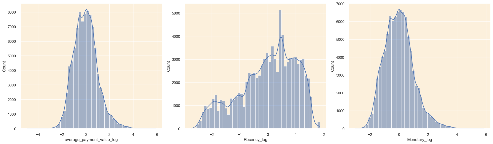
Dimension Reduction
Dimension Reduction is helpful in improving clustering performance, in that it not only reduces computational cost, but also can filter noises and reduce multicolinearity.
Since all of the features are numerical,no matter discrete or continuous, PCA can serve as a good performer in dimension reduction.
pca = PCA().fit(customer_scaled_selected)# Calculate the Cumulative Sum of the Explained Varianceexplained_variance_ratio = pca.explained_variance_ratio_cumulative_explained_variance = np.cumsum(explained_variance_ratio)
optimal_k =3# Set seaborn plot stylesns.set(rc={'axes.facecolor': '#fcf0dc'}, style='darkgrid')# Plot the cumulative explained variance against the number of componentsplt.figure(figsize=(20, 10))# Bar chart for the explained variance of each componentbarplot = sns.barplot(x=list(range(1, len(cumulative_explained_variance) +1)), y=explained_variance_ratio, color='#fcc36d', alpha=0.8)# Line plot for the cumulative explained variancelineplot, = plt.plot(range(0, len(cumulative_explained_variance)), cumulative_explained_variance, marker='o', linestyle='--', color='#ff6200', linewidth=2)# Plot optimal k value lineoptimal_k_line = plt.axvline(optimal_k -1, color='red', linestyle='--', label=f'Optimal k value = {optimal_k}') # Set labels and titleplt.xlabel('Number of Components', fontsize=14)plt.ylabel('Explained Variance', fontsize=14)plt.title('Cumulative Variance vs. Number of Components', fontsize=18)# Customize ticks and legendplt.xticks(range(0, len(cumulative_explained_variance)))plt.legend(handles=[barplot.patches[0], lineplot, optimal_k_line], labels=['Explained Variance of Each Component', 'Cumulative Explained Variance', f'Optimal k value = {optimal_k}'], loc=(0.62, 0.1), frameon=True, framealpha=1.0, edgecolor='#ff6200') # Display the variance values for both graphs on the plotsx_offset =-0.3y_offset =0.01for i, (ev_ratio, cum_ev_ratio) inenumerate(zip(explained_variance_ratio, cumulative_explained_variance)): plt.text(i, ev_ratio, f"{ev_ratio:.2f}", ha="center", va="bottom", fontsize=10)if i >0: plt.text(i + x_offset, cum_ev_ratio + y_offset, f"{cum_ev_ratio:.2f}", ha="center", va="bottom", fontsize=10)plt.grid(axis='both') plt.show()
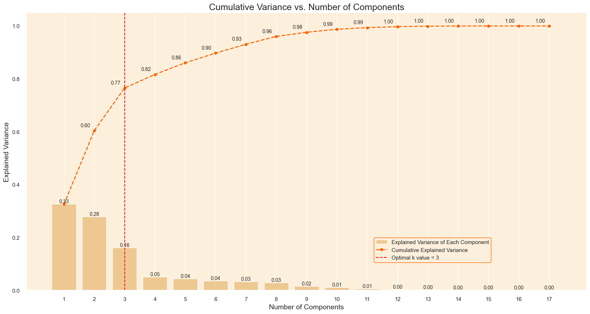
The elbow point of the curve is Number of Components = 3, and also the first 3 components explained 77% of the variance. So I selected the first 3 components for clustering.
pca = PCA(n_components=3)# Fitting and transforming the original data to the new PCA dataframecustomer_data_pca = pca.fit_transform(customer_scaled_selected)# Creating a new dataframe from the PCA dataframe, with columns labeled PC1, PC2, etc.customer_data_pca = pd.DataFrame(customer_data_pca, columns=['PC'+str(i+1) for i inrange(pca.n_components_)])# Adding the CustomerID index back to the new PCA dataframecustomer_data_pca.index = customer_scaled_selected.index
customer_data_pca.head()
PC1
PC2
PC3
customer_unique_id
0000366f3b9a7992bf8c76cfdf3221e2
0.109962
-0.986174
0.604186
0000b849f77a49e4a4ce2b2a4ca5be3f
-2.188384
0.941131
0.688110
0000f46a3911fa3c0805444483337064
0.053665
1.220612
-1.316093
0000f6ccb0745a6a4b88665a16c9f078
-1.384574
0.825731
-0.612252
0004aac84e0df4da2b147fca70cf8255
0.556544
-1.203022
-0.600886
General Clustering
I did not use Agglomerative Clustering since our dataset is too large (~100,000) to compute efficiently. Since there are outliers, DBSCAN may perform good on clustering. So I experimented with both Kmeans and DBSCAN.
K-means
Select K
silhouette score: measures the performance of clustering by both Within Cluster Cohension and Inter Cluster Separation.
elbow method: determines the optimal K where the Within Cluster Cohesion (Sum Squares) starts to decrease slowly, like the elbow point of the arm.
Silhouette Score
def silhouette_analysis(df, start_k, stop_k, figsize=(15, 16)):""" Perform Silhouette analysis for a range of k values and visualize the results. """# Set the size of the figure plt.figure(figsize=figsize)# Create a grid with (stop_k - start_k + 1) rows and 2 columns grid = gridspec.GridSpec(stop_k - start_k +1, 2)# Assign the first plot to the first row and both columns first_plot = plt.subplot(grid[0, :]) sns.set_palette(['darkorange']) silhouette_scores = []# Iterate through the range of k valuesfor k inrange(start_k, stop_k +1): km = KMeans(n_clusters=k, init='k-means++', n_init=10, max_iter=100, random_state=0) km.fit(df)print(f'fit {k} ended') labels = km.predict(df)print(f'predict {k} ended') score = silhouette_score(df, labels)print(f'silhouette {k} ended') silhouette_scores.append(score) best_k = start_k + silhouette_scores.index(max(silhouette_scores)) plt.plot(range(start_k, stop_k +1), silhouette_scores, marker='o') plt.xticks(range(start_k, stop_k +1)) plt.xlabel('Number of clusters (k)') plt.ylabel('Silhouette score') plt.title('Average Silhouette Score for Different k Values', fontsize=15)# Add the optimal k value text to the plot optimal_k_text =f'The k value with the highest Silhouette score is: {best_k}' plt.text(10, 0.23, optimal_k_text, fontsize=12, verticalalignment='bottom', horizontalalignment='left', bbox=dict(facecolor='#fcc36d', edgecolor='#ff6200', boxstyle='round, pad=0.5'))
fit 2 ended
predict 2 ended
silhouette 2 ended
fit 3 ended
predict 3 ended
silhouette 3 ended
fit 4 ended
predict 4 ended
silhouette 4 ended
fit 5 ended
predict 5 ended
silhouette 5 ended
fit 6 ended
predict 6 ended
silhouette 6 ended
fit 7 ended
predict 7 ended
silhouette 7 ended
fit 8 ended
predict 8 ended
silhouette 8 ended
fit 9 ended
predict 9 ended
silhouette 9 ended
fit 10 ended
predict 10 ended
silhouette 10 ended
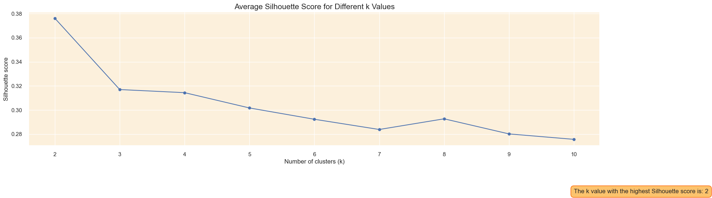
range_n_clusters = [2, 3, 4, 5, 6]for n_clusters in range_n_clusters:# The 1st subplot is the silhouette plot# The silhouette coefficient can range from -1, 1 but in this example all# lie within [-0.1, 1] plt.xlim([-0.1, 1])# The (n_clusters+1)*10 is for inserting blank space between silhouette# plots of individual clusters, to demarcate them clearly. plt.ylim([0, len(customer_data_pca) + (n_clusters +1) *10])# Initialize the clusterer with n_clusters value and a random generator# seed of 42 for reproducibility. clusterer = KMeans(n_clusters=n_clusters, init='k-means++', n_init=10, max_iter=100, random_state=0) cluster_labels = clusterer.fit_predict(customer_data_pca)# The silhouette_score gives the average value for all the samples.# This gives a perspective into the density and separation of the formed# clusters silhouette_avg = silhouette_score(customer_data_pca, cluster_labels)print("For n_clusters =", n_clusters,"The average silhouette_score is :", silhouette_avg)# Compute the silhouette scores for each sample sample_silhouette_values = silhouette_samples(customer_data_pca, cluster_labels) y_lower =10for i inrange(n_clusters):# Aggregate the silhouette scores for samples belonging to# cluster i, and sort them ith_cluster_silhouette_values = sample_silhouette_values[cluster_labels == i] ith_cluster_silhouette_values.sort() size_cluster_i = ith_cluster_silhouette_values.shape[0] y_upper = y_lower + size_cluster_i color = cm.nipy_spectral(float(i) / n_clusters) plt.fill_betweenx(np.arange(y_lower, y_upper),0, ith_cluster_silhouette_values, facecolor=color, edgecolor=color, alpha=0.7)# Label the silhouette plots with their cluster numbers at the middle plt.text(-0.05, y_lower +0.5* size_cluster_i, str(i))# Compute the new y_lower for next plot y_lower = y_upper +10# 10 for the 0 samples plt.title("The silhouette plot for the various clusters.") plt.xlabel("The silhouette coefficient values") plt.ylabel("Cluster label")# The vertical line for average silhouette score of all the values plt.axvline(x=silhouette_avg, color="red", linestyle="--") plt.yticks([]) # Clear the yaxis labels / ticks plt.xticks([-0.1, 0, 0.2, 0.4, 0.6, 0.8, 1]) plt.show()# # 2nd Plot showing the actual clusters formed# colors = cm.nipy_spectral(cluster_labels.astype(float) / n_clusters)# ax2.scatter(customer_data_pca[:, 0], customer_data_pca[:, 1], marker='.', s=30, lw=0, alpha=0.7,# c=colors, edgecolor='k')# # Labeling the clusters# centers = clusterer.cluster_centers_# # Draw white circles at cluster centers# ax2.scatter(centers[:, 0], centers[:, 1], marker='o',# c="white", alpha=1, s=200, edgecolor='k')# for i, c in enumerate(centers):# ax2.scatter(c[0], c[1], marker='$%d$' % i, alpha=1,# s=50, edgecolor='k')# ax2.set_title("The visualization of the clustered data.")# ax2.set_xlabel("Feature space for the 1st feature")# ax2.set_ylabel("Feature space for the 2nd feature")# plt.suptitle(("Silhouette analysis for KMeans clustering on sample data "# "with n_clusters = %d" % n_clusters),# fontsize=14, fontweight='bold')# plt.show()
For n_clusters = 2 The average silhouette_score is : 0.3761681168733558
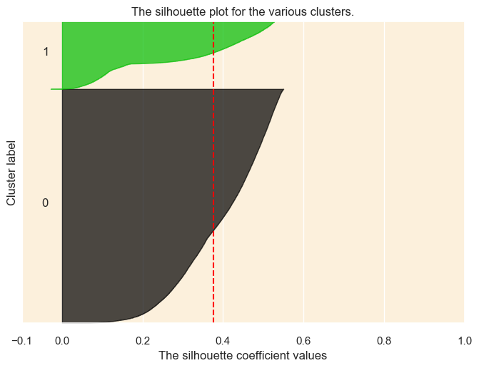
For n_clusters = 3 The average silhouette_score is : 0.316989450190434
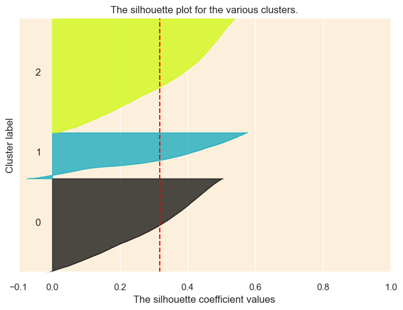
For n_clusters = 4 The average silhouette_score is : 0.31440785581351616
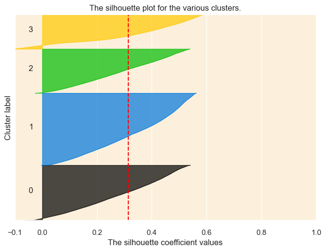
For n_clusters = 5 The average silhouette_score is : 0.3017098092318609
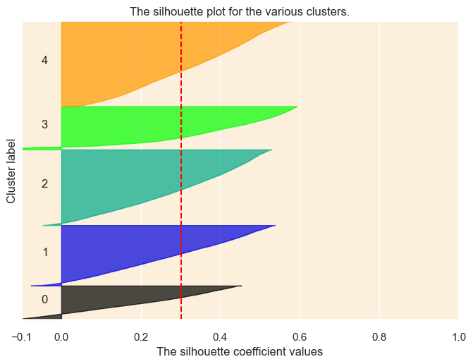
For n_clusters = 6 The average silhouette_score is : 0.2923251985667532
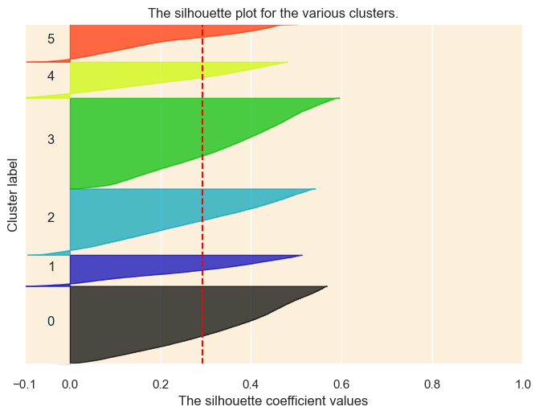
Elbow Method
# Set plot style, and background colorsns.set(style='darkgrid', rc={'axes.facecolor': '#fcf0dc'})# Set the color palette for the plotsns.set_palette(['#ff6200'])# Instantiate the clustering model with the specified parameterskm = KMeans(init='k-means++', n_init=10, max_iter=100, random_state=0)# Create a figure and axis with the desired sizefig, ax = plt.subplots(figsize=(12, 5))# Instantiate the KElbowVisualizer with the model and range of k values, and disable the timing plotvisualizer = KElbowVisualizer(km, k=(2, 15), timings=False, ax=ax)# Fit the data to the visualizervisualizer.fit(customer_data_pca)# Finalize and render the figurevisualizer.show()
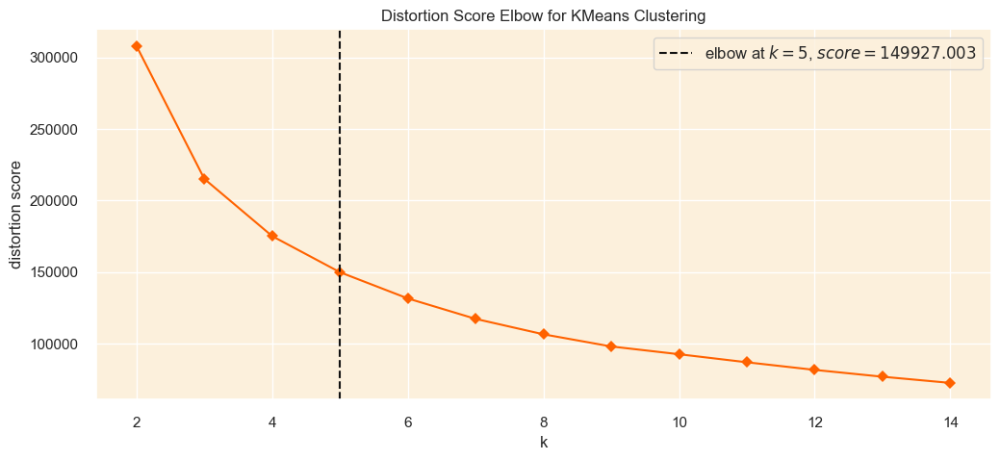
Considering both methods and the silhouette plot, since k=3 results in the most balanced clustering, we selected k=3 for customer segmentation
DBSCAN (Density-Based Spatial Clustering of Applications with Noise) is a popular clustering algorithm that is primarily used to identify clusters of varying shapes and sizes in a dataset, while effectively handling noise and outliers.
There are two major hyperparameters for DBSCAN:
* min_samples: the minimum number of points required to form a dense region
* eps: the radius of a neighborhood around a point
To choose the optimal hyperparams, I still used silhouette scores and applied grid search.
* For min_samples, choose MinPts = 2dim (Sander et al., 1998) After determining, min_samples, use sklearn NearestNeighbors and find the optimal value for eps at the point where the graph has the greatest slope (https://iopscience.iop.org/article/10.1088/1755-1315/31/1/012012/pdf)
Hyperparameter Tuning
min_samples = np.arange(8,20) # min_samples values to be investigatedno_of_clusters = []sil_score = []for p in min_samples: DBS_clustering = DBSCAN(min_samples=p).fit(customer_data_pca)print(f'done dbs for min_samples={p}') no_of_clusters.append(len(np.unique(DBS_clustering.labels_))) sil_score.append(silhouette_score(customer_data_pca, DBS_clustering.labels_))print(f'done silhouette for min_samples={p}')print(sil_score)
done dbs for min_samples=8
done silhouette for min_samples=8
done dbs for min_samples=9
done silhouette for min_samples=9
done dbs for min_samples=10
done silhouette for min_samples=10
done dbs for min_samples=11
done silhouette for min_samples=11
done dbs for min_samples=12
done silhouette for min_samples=12
done dbs for min_samples=13
done silhouette for min_samples=13
done dbs for min_samples=14
done silhouette for min_samples=14
done dbs for min_samples=15
done silhouette for min_samples=15
done dbs for min_samples=16
done silhouette for min_samples=16
done dbs for min_samples=17
done silhouette for min_samples=17
done dbs for min_samples=18
done silhouette for min_samples=18
done dbs for min_samples=19
done silhouette for min_samples=19
[-0.009489853384687743, -0.006838292858965334, -0.0014159662778925194, 0.042729647300251875, 0.08375443649412295, 0.08155841350655721, 0.07860323502963336, 0.07736970791237523, 0.07620276330994492, 0.07518689929174915, 0.07385848241900356, 0.07288400174551811]
The highest silhouette score came from min_samples = 12
neighbors = NearestNeighbors(n_neighbors=12)neighbors_fit = neighbors.fit(customer_data_pca)distances, indices = neighbors_fit.kneighbors(customer_data_pca)
plt.figure(figsize=(12,8))plt.ylim(0, 1) # Set the lower limit to None (default) and upper limit to 0.5# Add grid for y-axisplt.grid(axis='y', linewidth=0.5, linestyle='--', color='gray', alpha=0.5)plt.yticks([i for i in np.arange(0, 1.5, 0.05)])plt.plot(distances[80000:])plt.xlabel('Points')plt.ylabel('Eps')
kneedle = KneeLocator(range(1,len(distances[80000:])+1), #x values distances[80000:], # y values S=1.0, #parameter suggested from paper curve="convex", #parameter from figure direction="increasing") #parameter from figure
print(kneedle.elbow)
12764
distances[kneedle.elbow+80000]
0.9905104945805809
The elbow point is 0.99, so the optimal eps could be set at 0.99
Summary:
the optimal hyperparameter could be set as {min_samples: 12, eps: 0.99}
Clustering
DBS_clustering = DBSCAN(eps=0.99, min_samples=12).fit(customer_data_pca)print('Number of Clusters:', len(np.unique(DBS_clustering.labels_)))print('Silhouette Score:', silhouette_score(customer_data_pca, DBS_clustering.labels_))
Number of Clusters: 2
Silhouette Score: 0.4784132779944284
Since the DBSCAN above only resulted in 2 clusters, with one of them being the outlier cluster (label=-1) and the normal points not separated, which means it is not insightful enough. I selected another point a bit lower than 0.99 to generate more than 2 clusters:
DBS_clustering = DBSCAN(eps=0.6, min_samples=12).fit(customer_data_pca)print('Number of Clusters:', len(np.unique(DBS_clustering.labels_)))print('Silhouette Score:', silhouette_score(customer_data_pca, DBS_clustering.labels_))
Number of Clusters: 5
Silhouette Score: 0.07423133741533854
plt.xlim([-0.1, 1])plt.ylim([0, len(customer_data_pca) + (5+1) *10])cluster_labels = DBS_clustering.labels_# silhouette_avg = silhouette_score(customer_data_pca, cluster_labels)print("The average silhouette_score is :", silhouette_avg)# sample_silhouette_values = silhouette_samples(customer_data_pca, cluster_labels)y_lower =10for i inrange(5): ith_cluster_silhouette_values = sample_silhouette_values[cluster_labels == i-1] ith_cluster_silhouette_values.sort() size_cluster_i = ith_cluster_silhouette_values.shape[0] y_upper = y_lower + size_cluster_i color = cm.nipy_spectral(float(i) /5) plt.fill_betweenx(np.arange(y_lower, y_upper),0, ith_cluster_silhouette_values, facecolor=color, edgecolor=color, alpha=0.7) plt.text(-0.05, y_lower +0.5* size_cluster_i, str(i)) y_lower = y_upper +10# 10 for the 0 samplesplt.title("The silhouette plot for the various clusters.")plt.xlabel("The silhouette coefficient values")plt.ylabel("Cluster label")plt.axvline(x=silhouette_avg, color="red", linestyle="--")plt.yticks([]) # Clear the yaxis labels / ticksplt.xticks([-0.1, 0, 0.2, 0.4, 0.6, 0.8, 1])plt.show()
The average silhouette_score is : 0.07423133741533854
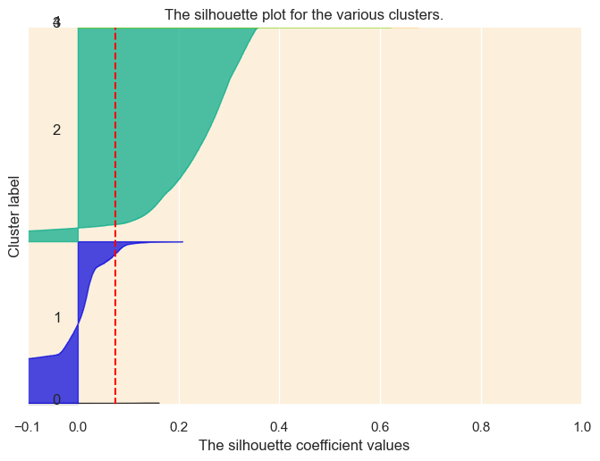
Summary
From silhouette score and silhouette plot, we can see that DBSCAN does not perform so well as kmeans on our data, especially in terms of customer segmentation.
Kmeans is much less expensive than DBSCAN for large dataset, and tends to produce clusters of roughly equal size, which is more helpful for customer segmentation. DBSCAN is valued more for its outlier detection function, and thus it is not so useful as kmeans in our case.
Therefore, we used the kmeans clustering results for customer segmentation analysis.
def make_radar_chart(ax, stats, attribute_labels=cluster_centroids.columns, plot_str='-', color='b'): angles = np.linspace(0, 2* np.pi, len(attribute_labels), endpoint=False).tolist() stats = np.concatenate((stats, [stats[0]])) # Close the loop angles += angles[:1] # Close the loop ax.set_theta_offset(np.pi /2) ax.set_theta_direction(-1) ax.fill(angles, stats, alpha=0.25) ax.plot(angles, stats, plot_str, marker='o', color=color) ax.set_xticks(angles[:-1]) ax.set_xticklabels(attribute_labels)# adjust the location and direction of labelsfor label, angle inzip(ax.get_xticklabels(), angles):if angle in (0, np.pi): label.set_horizontalalignment('center')elif0< angle < np.pi: label.set_horizontalalignment('left')else: label.set_horizontalalignment('right') label.set_verticalalignment('bottom') label.set_rotation(np.degrees(angle)) label.set_rotation_mode('anchor')fig, axs = plt.subplots(nrows=1, ncols=3, figsize=(20, 12), subplot_kw=dict(polar=True))colors = ['red', 'green', 'blue', 'orange']for i, ax inenumerate(axs.flatten()): make_radar_chart(ax, cluster_centroids_scaled[i], color=colors[i]) ax.set_title(f'Cluster {i+1}')plt.tight_layout() plt.show()
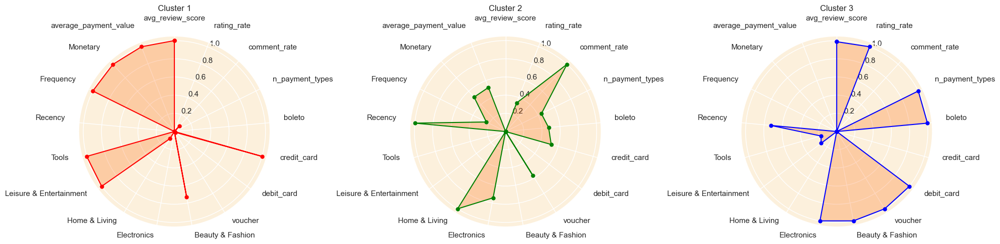
cluster_centroids_scaled_df
avg_review_score
rating_rate
comment_rate
n_payment_types
boleto
credit_card
debit_card
voucher
Beauty & Fashion
Electronics
Home & Living
Leisure & Entertainment
Tools
Recency
Frequency
Monetary
average_payment_value
0
1.000000
0.000000
0.079583
0.000000
0.000000
1.000000
0.013884
0.000000
0.732174
0.000000
0.091851
1.000000
1.00000
0.000000
1.000000
1.000000
1.000000
1
0.000000
0.337093
1.000000
0.439396
0.474738
0.520865
0.000000
0.569441
0.000000
0.741773
1.000000
0.000000
0.00000
1.000000
0.235181
0.512035
0.519531
2
0.987542
1.000000
0.000000
1.000000
1.000000
0.000000
1.000000
1.000000
1.000000
1.000000
0.000000
0.213989
0.17931
0.726186
0.000000
0.000000
0.000000
cluster_centroids
avg_review_score
rating_rate
comment_rate
n_payment_types
boleto
credit_card
debit_card
voucher
Beauty & Fashion
Electronics
Home & Living
Leisure & Entertainment
Tools
Recency
Frequency
Monetary
average_payment_value
kmeans3
0
4.672710
0.999684
0.383712
1.017199
0.171529
0.801654
0.013642
0.013175
0.205555
0.198154
0.306046
0.196458
0.093786
278.157091
1.053870
282.269909
268.678089
1
1.628379
0.999766
0.700008
1.024563
0.196059
0.762719
0.013583
0.027638
0.185785
0.225118
0.348354
0.158344
0.082399
294.131104
1.027127
176.781124
169.928559
2
4.634783
0.999928
0.356363
1.033959
0.223200
0.720394
0.017832
0.038574
0.212787
0.234505
0.301767
0.166500
0.084441
289.757193
1.018904
66.088888
63.150857
Summary
From both the unscaled and scaled data, we can see that several features are not very significant among clusters:
rating rate, number of payment types, Recency and Frequency. That is because most of the customers rate their order and purchased only once.
However, there are several significant features too, such as Monetary, average review score, comment rate, etc.
In profiling the customers, we mainly focusing on the significant features, but also aid our analysis with others that are helpful.
Cluster 0:
review behavior: High average review score, Low comment rate
payment preference: loyal to credit card, low voucher –> low diversity, campaign unresponsive
product preference: prefer Beauty&Fashion, Leisure&Entertainment and Tools–> high-value items
RFM: Low Recency, High Frequency, High Monetary and High average_payment_value
Cluster 1:
review behavior: Low average review score, High comment rate
payment preference: both boleto and credit card, high use rate of voucher –> high diversity, campaign responsive
product preference: prefer Electronics and HomeLiving
RFM: High Recency, Mid Frequency, Mid Monetary and Mid average_payment_value
Cluster 2:
review behavior: High average review score, Low comment rate
payment preference: most balanced and diverse payment method, high use rate of voucher –> high diversity, campaign responsive
product preference: prefer Beauty&Fashion, Home&Living and Electronics
RFM: Mid Recency, Low Frequency, Low Monetary and Low average_payment_value
Since most of the customers in our data only purchased once, and we do not have enough data to get insight into the customer retention, we do not define each segments and marketing strategies using Recency and Frequency.
Segmentation Insights and Marketing Strategies
Based on the Statistical Summay above, we can define the 3 segments and tailor marketing strategies for different customer segments:
Cluster 0: Loyal, High-Value, but Low-Engagement Customers:
They have high frequency, and high average review score, denoting their loyalty and satisfaction;
They are less responsive to marketing campaign, and have low comment rates, denoting low-engagement;
They prefer high-value items, have high monetary values, denoting their high purchasing power.
🔍 Marketing Strategies:
Enhance Relationship Marketing by Providing Value-Add Services:
Provide personalized value-added services and rewards for them, like loyalty membership, including exclusive offers and member-only events, to solidify the relationship and enhance satisfaction;
Brand Advocates:
Encourage these customers to share their positive experiences through word of mouth and social media, and also implement referral programs that can reward customers for bringing in new customers
Cluster 1: Engaged, Responsive, but Demanding Customers:
They have high comment rates and high campaign response rates, denoting their high-engagement;
Despite their high comment rates, they have much lower average review scores, indicating that they are very demanding and even picky, hard to deal with;
They are highly responsive to marketing compaigns, indicating that they are sensitive to price.
🔍 Marketing Strategies:
Targeted promotions and discounts:
Offer them targeted marketing campaigns such as vouchers and discounts, using email and app for notification, to incentivize them to purchase;
Enhance customer support and feedback loop:
Provide them with priority customer support, where their negative reviews and feedbacks can be answered and addressed frequently and respectfully.
Cluster 2: At-Risk but Opportunistic Customers:
They have low frequency, low monetary value, and low comment rate, but highly responsive to marketing campaigns
These customers are more passive in purchasing on Olist, engaging primarily when there are incentives or promotions.
However, their average review score is high, meaning that they are worth retaining due to their significant potential value opportunities.
🔍 Marketing Strategies:
Personalized Re-engagement Campaigns:
Design personalized loyalty program to encourage engagement, such as subscription and membership rewards; and also intensify personalized emails or targeted ads to remind them of the benefits they can enjoy and introduce them to new offers tailored to their preferences.
Targeted promotions and discounts:
Offer them targeted marketing campaigns such as vouchers and discounts to lure them back once they are detected at-risk.
Classification Modeling
After clustering and segmentation, we have already generated the class labels for customers. At industry level, there are far more things to do besides merely analyzing the static data. Below is an overview of the process:
1. Label customers based on their features using clustering and customer segmentation analytics;
2. Build classification model that can categorize customers into segments rapidly;
3. Collect and update database dynamically, engineer features in pipeline, and categorize customers using the classification model (instead of clustering fron the beginning);
4. Monitor the model performance, and retrain the model based on new data
That said, it’s helpful if we can develop a classification model that can categorize customers based on their features.
Actually, simply train the model based on the engineered dataset customer_scaled_selected would introduce data leakage risk, since all these features are time-related, and future data may be used in the training set if we conduct random train-test-split.
An improved version would be we split the original e-commerce data into two by an exact time stamp, and conduct feature engineering, clustering, customer segmentation and labeling, all thos things independently on the two datasets, and eventually train our classification model on the former dataset and test it on the latter one.
However, since most of the customers in our data only purchased once so that there is little leakage, we simply split our data randomly.
X = customer_scaled_selected.drop(columns=['Label', 'customer_unique_id'], axis=1)y = customer_scaled_selected['Label']
import loggingimport lightgbm as lgblogger = logging.getLogger('lightgbm')logger.setLevel(logging.ERROR)
Single Train-Test-Split Score
X_train, X_test, y_train, y_test = train_test_split( X, y, test_size=0.2, # 20% of the data goes to the test set random_state=42, # for reproducibility stratify=y # ensure stratified splitting)# Check the distribution of labels in each setprint("Label distribution in the training set:")print(pd.value_counts(y_train, normalize=True)) # Normalized distributionprint("\nLabel distribution in the test set:")print(pd.value_counts(y_test, normalize=True)) # Normalized distribution
Label distribution in the training set:
Label
2 0.446951
0 0.370837
1 0.182212
Name: proportion, dtype: float64
Label distribution in the test set:
Label
2 0.446895
0 0.370837
1 0.182268
Name: proportion, dtype: float64
models = {"Random Forest": RandomForestClassifier(verbose=0, random_state=42),"XGBoost": XGBClassifier(use_label_encoder=False, eval_metric='mlogloss', verbose=0, random_state=42),"LightGBM": LGBMClassifier(verbose=0, random_state=42),"CatBoost": CatBoostClassifier(verbose=0, random_state=42)}# Train and evaluate modelsfor name, model in models.items(): model.fit(X_train, y_train) y_pred = model.predict(X_test)# Calculate metrics accuracy = accuracy_score(y_test, y_pred) precision = precision_score(y_test, y_pred, average='macro') recall = recall_score(y_test, y_pred, average='macro') f1 = f1_score(y_test, y_pred, average='macro')print(f"{name} performance on the test set:")print(f"Accuracy: {accuracy:.5f}")print(f"Precision: {precision:.5f}")print(f"Recall: {recall:.5f}")print(f"F1 Score: {f1:.5f}")print("Confusion Matrix:")print(confusion_matrix(y_test, y_pred))print("Classification Report:")print(classification_report(y_test, y_pred))print("\n")
[LightGBM] [Warning] Found whitespace in feature_names, replace with underlines
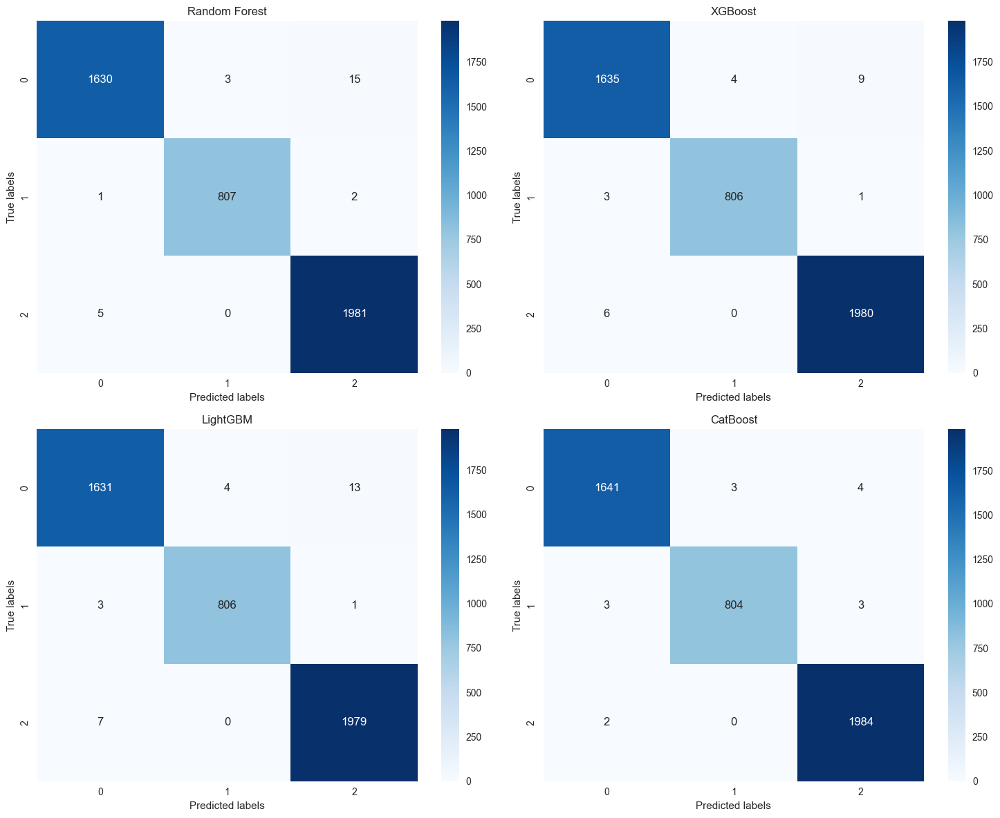
Cross-Validation Score
kfold = StratifiedKFold(n_splits=5,shuffle=True,random_state=8888)rf_model = RandomForestClassifier(verbose=0, random_state=42)rf_scores = cross_val_score(rf_model, X, y, cv=kfold)print("Random Forest average accuracy:", np.mean(rf_scores))# XGBoostxgb_model = XGBClassifier(use_label_encoder=False, eval_metric='mlogloss', verbose=0, random_state=42)xgb_scores = cross_val_score(xgb_model, X, y, cv=kfold)print("XGBoost average accuracy:", np.mean(xgb_scores))# LightGBMlgbm_model = LGBMClassifier(verbose=0, random_state=42)lgbm_scores = cross_val_score(lgbm_model, X, y, cv=kfold)print("LightGBM average accuracy:", np.mean(lgbm_scores))# CatBoostcat_model = CatBoostClassifier(verbose=0, random_state=42) cat_scores = cross_val_score(cat_model, X, y, cv=kfold)print("CatBoost average accuracy:", np.mean(cat_scores))
Random Forest average accuracy: 0.9936543654365437
XGBoost average accuracy: 0.994824482448245
[LightGBM] [Warning] Found whitespace in feature_names, replace with underlines
[LightGBM] [Warning] No further splits with positive gain, best gain: -inf
[LightGBM] [Warning] Found whitespace in feature_names, replace with underlines
[LightGBM] [Warning] Found whitespace in feature_names, replace with underlines
[LightGBM] [Warning] Found whitespace in feature_names, replace with underlines
[LightGBM] [Warning] No further splits with positive gain, best gain: -inf
[LightGBM] [Warning] Found whitespace in feature_names, replace with underlines
[LightGBM] [Warning] No further splits with positive gain, best gain: -inf
LightGBM average accuracy: 0.9941494149414941
CatBoost average accuracy: 0.9955445544554454
[LightGBM] [Warning] Found whitespace in feature_names, replace with underlines
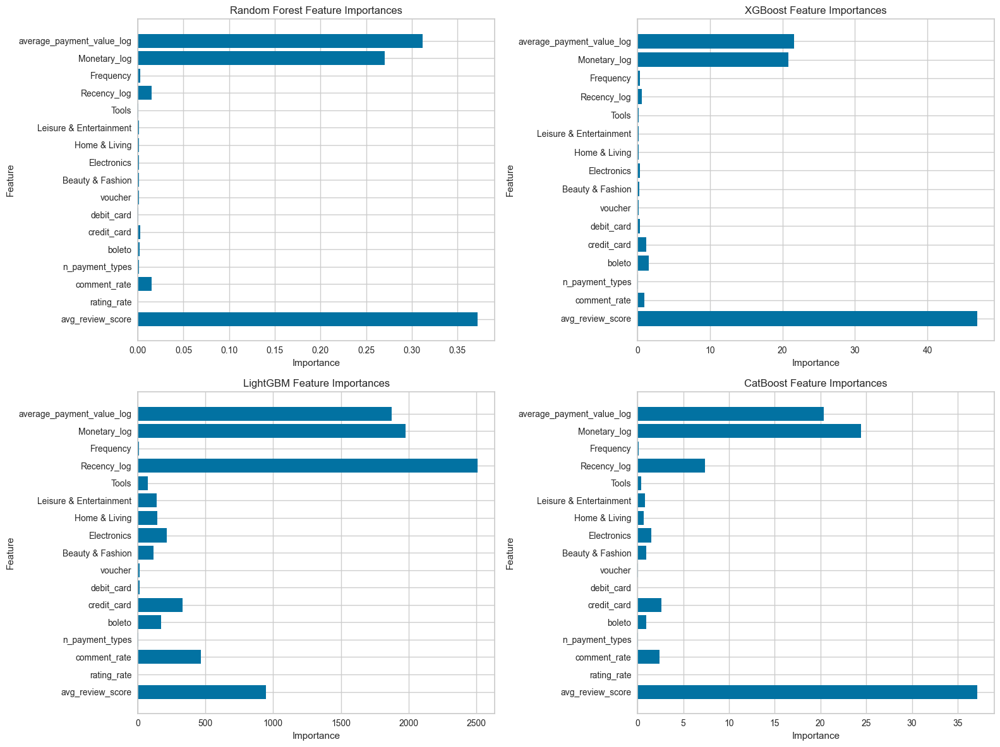
Why different?
* The feature importance in Random Forest is primarily determined by Gini impurity at its splits across all trees in the forest. Specifically, it calculates the average reduction in impurity that occurs due to splits over a given feature.
* XGBoost’s feature importance is computed by ‘Gain’, which represents the average gain of the splits where the feature was used, calculated by the change of gradient and hessian of the objective function.
* Lightgbm’s feature importance is the same as XGBoost, but here we used the default for lightgbm, which is the frequency of features that counts the number of times a feature is used to split the data across all trees.
* CatBoost calculates feature importance by measuring the Permutation Feature Importance during model training, which is done by assessing how model performance varies with the exclusion of a feature.
# Sort Features in The Order of Importancemodels = {"Random Forest": RandomForestClassifier(verbose=0, random_state=42),"XGBoost": XGBClassifier(use_label_encoder=False, eval_metric='mlogloss', verbose=0, random_state=42),"LightGBM": LGBMClassifier(verbose=0, random_state=42),"CatBoost": CatBoostClassifier(verbose=0, random_state=42)}feature_names =list(X.columns)feature_importances = {}for name, model in models.items(): model.fit(X, y)ifhasattr(model, 'feature_importances_'): importance = model.feature_importances_else: importance = model.get_feature_importance() features_sorted =sorted(zip(feature_names, importance), key=lambda x: x[1], reverse=False) feature_importances[name] = features_sortedfig, axes = plt.subplots(2, 2, figsize=(16, 12))axes = axes.ravel()for i, (name, features) inenumerate(feature_importances.items()): features, importances =zip(*features) axes[i].barh(features, importances) axes[i].set_title(f'{name} Feature Importances') axes[i].set_xlabel('Importance') axes[i].set_ylabel('Feature')plt.tight_layout()plt.show()
[LightGBM] [Warning] Found whitespace in feature_names, replace with underlines
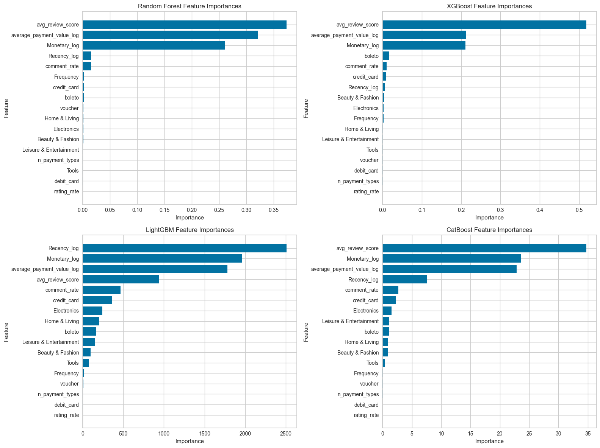
Summary
The classification models all achieved very high performance in predicting customer segments, with all classification metrics reaching more than 99%. That is because the labels for classification are generated by clustering the data using the same features. It may not be convincing, but represents our idea of speeding our customer categorization at industry level.
However, the feature importance generated by the ensemble-tree models could share important insights on feature selection. From the feature importance plot, we can see that the average review score and monetary are always listed at the top, indicating their importance in not only prediction, but also the previous customer segmentation. Rating rate, number of payment types and frequency do not count very much, because most of the customers share similar preference in terms of these features.